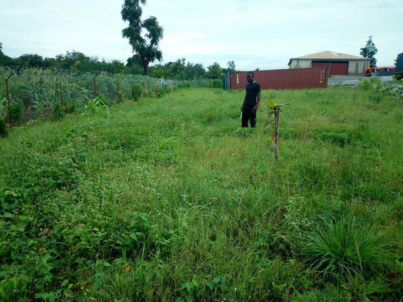

Service
Real Estate & Land
Land sourcing, title verification, acquisition and development.
Most property losses in Nigeria start before anything is built: the wrong title, the wrong seller or the wrong plot. We help you find, verify and secure land or property, then develop it.
We are SCUML-registered. Real-estate transactions require customer due diligence before any money changes hands.
What this covers
- Land and property sourcing against your brief, with comparable-price analysis and negotiation support
- Title due diligence with a lawyer and surveyor (C of O, Governor's consent, survey charting, excision)
- Acquisition, documentation and perfection of title
- Feasibility studies and development appraisals
- Estate planning, design and delivery
- Technical due diligence before purchase: site, soil, drainage, access and structural condition
- Sales advisory for owners disposing of property
- Customer due diligence (KYC/AML) as required for real-estate transactions
Related work

Drainage, Erosion Control & Reclamation
Channelisation, gabion revetment and land reclamation: building ground where there was water.

Industrial, Warehousing & Cold Chain
Portal frames, clear-span stores, insulated cold rooms and the yards that serve them.

Residential Development
Detached and semi-detached homes and estates, from setting out to handover.

Design & Consultancy
Feasibility, design, quantities and programmes before anyone breaks ground.
Next step
Tell us about your project.
Answer a few questions and send them to us on WhatsApp or email. You get a reference number straight away.